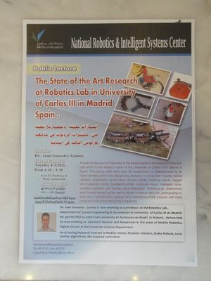

(click to enlarge)
Information
- Title: "The state of the art research at Robotics Lab in Carlos III University of Madrid"
- Event: Training on modular robot
- Speaker: Dr. Juan González-Gómez
- Duration: 30h
- Place: National Robotics & Intelligent Systems Center. King Abdulaziz City for Science and Technology (KACST). Riyadh, Saudi Arabia
- Date: March, 8th/2011
Abstract
A brief introduction is presented to the latest research developed at Robotics Lab which is the research team of the Carlos III Univesity of Madrid in Spain. This group, with more than 40 researchers, is characterized by its team-oriented and cross-disciplinary research in areas that include mobile robotics, automated construction, service robots, climbing robots, legged and humanoid robots, intelligent control, computer vision, intelligent transportation systems and human-robot interaction. RoboticsLab researchers work toward spreading the use of robots in human daily life, participating intensively in collaborative national and international R&D projects with robot using and robot manufacturing companies
Download
| File | Description |
|---|---|
| RoboticsLab-research.pdf | Slides, in PDF format |
| RoboticsLab-research.odp | Slides for OpenOffice 3.2 |
| On-line | Read the slides on line, in Scribd |
License
| |
Links
Acknowledgements
- Thanks to Dr. Khalid Aldakkan, head of the National Robotics & Intelligent Systems Center, for inviting me to give the conference
- Thanks to Dr. Eball H. Ahmad for his kindness and all the time he spent with Houxiang and me. I really appreciate it.
- Thanks to al the people at the National Robotics center. I really enjoyed a lot my time with all of you.
- Thanks to Prof. Houxiang Zhang for counting on me for the training on modular robots. Thank you very much ;-)
- Thank to Prof. Mohamed Abderrahim for the original slides he gave to me for the preparation of this talk
News
- March/19/2011. This page is published